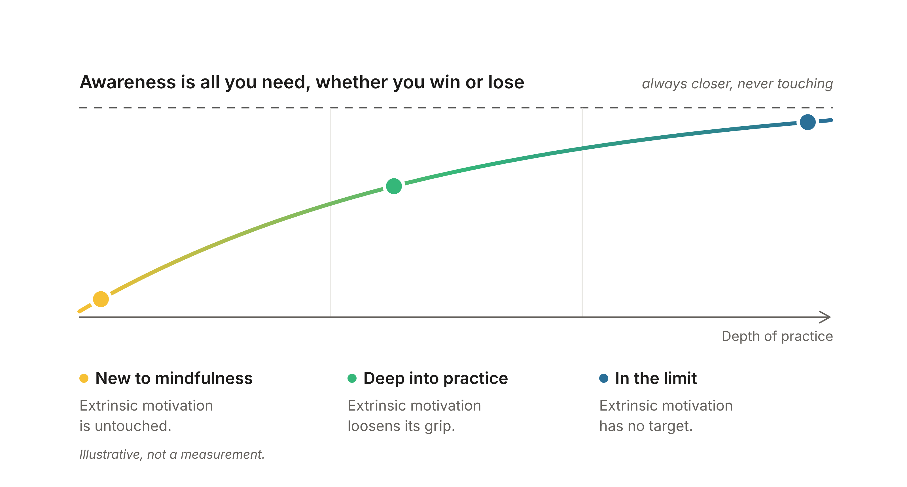

I saw this image randomly on Twitter the other day, in a very different context, but it reminded me of a question about mindfulness that I have been thinking about for some time. Two photos of the same sun over the same ocean. One is captioned "life when you win." The other is captioned "life when you lose." They are identical.
One way to read this image is as a compact version of an idea that runs all through the mindfulness world: this moment is already perfect. If you can see what is really going on right now, you find that it is already complete, and that nothing that happens adds to it or takes from it.
You can find the idea almost anywhere along the spectrum of mindfulness, from the secular end to the oldest traditions. At the secular end, Jon Kabat-Zinn says, "allow this moment to be exactly as it is, and allow yourself to be exactly as you are." Eckhart Tolle passes on a question from Zen: "What, at this moment, is lacking?" Sam Harris says that the space in which experience is appearing "is not improved by joy or harmed by anger." In the Hindu tradition of Advaita Vedanta, Ramana Maharshi says, "That which is is always there. Even now you are that."
Tibetan Buddhism has a tradition called Dzogchen, translated as "the great perfection." It teaches that nothing has to be added to this moment, only recognized. One of its teachers, James Low, says, "we awaken to what is already there." Stephan Bodian asks, "How does it feel to realize that nothing is missing or lacking right now?" And Adyashanti describes the mind's usual mistake as believing "I can be completely present with my own life when it's just a little bit different than it is right now."
The teachers differ, but the claim is the same: this moment, seen clearly, lacks nothing. The teachings that say so most directly are called non-dual. They add a second claim that matters later in this essay: everything that happens is an appearance in awareness, and nothing exists apart from awareness.1
A claim you can check
Since the world is full of conflicting claims about what is real, we need some way to tell which ones are true. I think the scientific method is the safest one to borrow. Scientists do not take a claim on trust. They ask how it could be tested, and then they test it. In the few centuries people have worked this way, we have learned more about the world than in all the time before, from how the universe began to how to build artificial intelligence.2
Most spiritual claims cannot be checked. They ask to be taken on the authority of a teacher or a text. The claim that this moment is already perfect is the first one I came across that is different, because you can check it yourself, in your own experience. As the Zen saying goes, the person who drinks the water knows for themselves whether it is cold or warm. When I check, in any single moment, it seems to hold. I can notice a contraction, the tightening that comes with wanting this moment to be different from how it is, see it dissolve, begin again, and find that nothing is missing.
The mindfulness motivation dilemma
If this moment is already perfect in "life when you win" and in "life when you lose" alike, why strive for anything? At first I thought of this as a paradox, but then AI helped clarify. Nothing there contradicts itself, so the better word is dilemma. There are two ways to answer the question, and either one means giving something up. If winning and losing are the same, I lose my externally motivated reasons to strive. If they are not, I lose the belief that this moment is already complete, and with it the relief of finding, whenever I look, that nothing is missing. Let's call this the mindfulness motivation dilemma.
There are two questions to untangle in the dilemma. The first is about logic: if this moment really is already perfect, does it follow that no future is better than any other? I think the answer is yes, and further down I will try to explain why. The second is about psychology: whatever the logic says, what does practicing this do to a person's motivation to work toward things? In the mindfulness community, teachers and students alike, we talk a lot about what the practice gives you. We rarely talk about what it might take away.
I think I care so much about resolving this dilemma because of how relevant it seems to be in everyday decision-making. To take one example, picture an ordinary Tuesday night. I am home from work with a free evening. I can spend it on whatever I would most enjoy tonight, without a thought about what it will do for me in the future. Or I can spend it on something I know I'll enjoy less but assume will help a future version of me. The first is an end in itself. The second is a means to an end. When I choose the second, I give up some tranquility tonight because I expect my life will be better later for it.
Nearly everything people strive for has that same shape. People earn degrees, save for a home and start businesses because they believe the future can be made better than the present. What keeps most of them focused on long-term goals that require short-term sacrifice is the sense that life is not yet what it should be, which the practice reveals to be an illusion. So the dilemma comes down to this: once I can no longer make myself believe that anything is missing, what gets me to stop what I am doing and sit down to do the work that is a means to an end?
I am writing this essay because the dilemma has stayed with me for a while, and the more I think it through, the more important it seems, particularly for people who are no longer new to mindfulness. But I am not yet confident that it is real. To build more confidence, my intention is to structure my thinking in writing and then share it with others who are deep into their practice and hear what I might be missing. This essay is not meant as an attack on mindfulness, which has given me so much. But if the dilemma is real and there is no satisfying answer to it, I believe it deserves more attention than it gets, so that others in the community are more prepared as they deepen their practice.
One request before you read on. If you are up for it, record a voice memo as you read, and say out loud whatever comes to mind: where you disagree, where something sounds off, where it matches your own experience. Then send me the recording, or have it transcribed and send me the transcript, whichever is easier.
Why give up anything now for a better future?
The first question was about logic: if this moment is already perfect, does it follow that no future is better than any other? Outside of meditation, almost everything I was taught about how to live well says that it requires deferred gratification: study now, save now, work hard now, and life will be better later. Put that advice next to the idea that this moment is already perfect, and the two do not mix.
Deferred gratification rests on the premise that some later moment can be better than it otherwise would have been, and that the difference is worth giving something up for now. It trades present tranquility for a better future. But if this moment is already perfect, and every moment is, then no future moment can be better in the sense that ultimately matters. Go back to the Tuesday night. If I spend it doing extra work to further my career, I trade some amount of tranquility tonight for a future that, in principle, is no better than the one I would have had anyway.3
If no moment can be better than another, there is no reason to give up anything now for the sake of later. I could ignore deferred gratification altogether and do whatever provides me the most tranquility in that moment. If regret or worry showed up afterwards, it would only be a sign that I had forgotten that no moment can be better than another. And I do not mean to imply that practice is a way of pushing uncomfortable feelings away. In my experience, once you have seen that nothing is missing, and can reliably see it when you look closely, awareness responds to those feelings in a way that dispels them, the way the fear of a snake vanishes once you see that it is a rope.
If there is a flaw in this reasoning, I have not found it. As far as I can tell, the image is either correct or incorrect.

- The image is correct. Life when you win and life when you lose are the same. The moment after I win and the moment after I lose are equally complete. Nothing is missing from either one. If so, I cannot call one of them better than the other, because there is nothing one has that the other lacks. And a sacrifice only makes sense if it leads to a better moment later, which on this view no moment can be.
- The image is incorrect. Awareness is the same in both lives, but the lives are not the same. Then some futures are better than others, and sacrifice makes sense. But this disagrees with more than the image. Non-dual teachings say nothing exists apart from awareness, and on this position there is something more to a moment than awareness, something that can be better or worse.
Both positions above cost something. If the image is correct, the claim that this moment is already perfect holds everywhere, with no exceptions. But then no future is better than any other, and everything people give up today for a better tomorrow—the studying, the saving, the Tuesday nights spent working—is tranquility they could have had, traded for a better future that was just an illusion.
If the image is incorrect and some futures really are better than others, those sacrifices make sense again. But then the foundation of the non-dual teachings is called into question, because the teaching does not say this moment is complete only when things are going well. It says this moment is complete, whether you win or lose. And if life when you win is better than life when you lose, then something can be missing after all, which creates an opening for the practice to become a way of feeling better about a worse situation.
I do not think there is a third position to take. My sense is that whether every moment is already complete is a claim about how reality is, closer to a law of physics than to a rule of thumb. A law does not hold on some evenings and lapse on others. Either nothing is ever missing, or sometimes something is. A position in between would have to say yes at some moments and no at others, and to do that it would need something like a compass to tell us which moments are which, and why.
Even with a compass, I would still be asked to believe, fully, that nothing is ever missing, and to believe, fully, that tonight something is. It would be like believing the earth is round when I face north and flat when I face south. The compass could tell me which belief to use when, but what I would really be doing is using whichever one is convenient at the time, telling myself that nothing is missing when I want comfort and that something is when I want motivation. This reminds me of the person who thanks God when things go well and says God works in mysterious ways when they do not.
An end in itself, or a means to an end
The second question was about psychology: what does practicing this do to a person's motivation to work toward things? It's easiest to speak from my own experience, so I'll go back to the Tuesday night. I am home, the next hour is free, and there is only one way to spend it. There are countless things I could choose. I will compare two of them, one that pays me now and later, and one that pays me only later.
The one that pays me now and later is stretching. It feels good while I am doing it, a physical release, and it is also good for my body in the long run, instant and deferred gratification together.
The one that pays me only later is work. To be fair, some nights I really do feel like working. But where stretching reliably feels good, the pull toward work comes and goes. On the nights it does not come, what gets me to do it is the hope that my life will be better later because I did this now. It might help my career, which might bring more status and more money, which might bring other things. Take the hope away and I lose the primary force that pulls me to it. Work like this, which I would do only for what it might lead to, is called instrumental work, work as a means to an end.
What practice does to a worry
When I was new to mindfulness, what got me to do instrumental work was the feeling that something was missing, which Buddhism calls dukkha. It mainly took the form of thoughts that my life was falling short in some specific way and that I should figure out how to fix it. I will call these thoughts "worries" for short. Some were about keeping up and not being good enough. I worried that my friends would move ahead of me in their careers until the gap made it hard to share a life with them. The same trips, the same dinners, the same kinds of problems to talk about. I worried that I had to keep improving my life, and keep making sacrifices to do it, to be appealing to a future life partner. Other worries were about family and security. I wanted to make my parents proud and to be able to take care of them when they get older, and I wanted to save enough that money would never be a problem.
As I have deepened my practice, these worries have continued to show up. What has changed is what happens when one does. Take the one about my friends passing me by. It starts with the same chain of thoughts about their careers compared with mine, and it ends with the same conclusion, “I am falling behind, and I should be making more sacrifices to catch up,” accompanied by a deep feeling of anxiety. But practice has created a space between a thought like that and acting on it. In that space I wonder what the thought is claiming and who it is about. I ask who the I in it is, a form of self-inquiry where you turn attention back on itself and look for the one who is looking. It took years of trial and error, but now, when I look for the me who is falling behind, I do not find him. There is just the anxious feeling, the thoughts about my friends and my career, and the awareness they show up in. Douglas Harding wrote a book about this search, On Having No Head. In it he says, "The best day of my life—my rebirthday, so to speak—was when I found I had no head." Where he expected to find himself, there was only the world showing up. With nobody for the worry to be about, it has nothing to hold on to, and its grip on me loosens.
The worry also loosens when I recognize that this moment could not have been any different. As Joan Tollifson writes, "Everything is as it is, and in this moment, it could not be otherwise." Everything that came before, back to the start of the universe, produced exactly this moment, this room, this body, this thought. If it is right—and I have no reason to think it is not—then to want this moment to be different is tantamount to wanting to be placed in a different universe. That seems absurd, like being upset that two plus two equals four.
I cannot decide to stop believing either of these, that there is nobody for the worry to be about and that this moment could not have been any different. It is like when I stopped believing in a personal God. I could not make myself believe again if I tried. But for a while the fear of being punished still came up, and each time I had to remember that there was nobody there to punish me. Years later the fear does not come up at all. In my mindfulness practice, I am still in that first stage. The worry comes up, as fast and as automatic as it ever was, and I have to slow down and look closely for the me it is about. Each time I find nobody.
Both of those steps, looking for the self and following cause and effect back, hold up when I inspect them, which makes what they reveal hard to deny. A worry that has been seen through this way weighs less, and a worry that weighs less has less power over what I do next.
In this first stage, when a worry shows up, I am pulled in two directions. One says the worry is pointing at something real and I should get to work to address it, even if that means deferring gratification. The other says nothing is missing. I notice the wrestling as it happens, and I can tell which side is losing. The worry is fading the way my fear of God's punishment faded.
In the limit, the practice points to a person who needs nothing but awareness and has no incentive to do more than what it takes to stay alive.4 I am nowhere near that. But the same practice that shows me nothing is missing is wearing down my extrinsic motivation, the force that drives me to put in the Tuesday nights. And I cannot tell whether I and the people I love will be better or worse off for it.
Three responses I hear
When I have brought up ideas like these with friends who practice regularly, the responses I get tend to revolve around three themes. None of them has resolved the dilemma for me so far, but I will try to lay them out here as fairly as I know how.
1. "It is true at the ultimate level, not the relative level"
The usual response is that "this moment is already perfect" is true at the ultimate level, while at the relative level consequences still matter. Buddhism calls this the two truths. This response says that the claim is true only in a certain context, and that outside of it there is such a thing as a better life, one worth working hard and making sacrifices for. That may well be right, but it is the second position from earlier, that the image is incorrect, under another name.
One could reply that the two levels answer different questions, one about what awareness is and the other about how to live. I accept that as a description. But I am asking one question, whether to spend this evening on what pays me now or on what might pay me later, and it needs one answer.
It also creates a practical problem. Each time instrumental work is an option, something has to tell me which level applies. Is this an ultimate-level moment, where nothing needs to change, or a relative-level one, where consequences count? This is the compass from earlier, and the two truths do not provide one. Even if they did, someone would need to use it. The obvious candidate would be a separate me, a self that exists independent of other appearances and stands above both levels, sorting moments into them. But that is the small self that I cannot find on close inspection. So this first response gives me an ultimate level and a relative level, but the Tuesday night is no clearer.
2. "You need decent conditions to be able to practice at all"
The second response says that the ability to see that nothing is missing is not available in every moment. It depends on conditions: sleep, health, a mind not consumed by pain, addiction or chaos. A life of doing whatever I want would erode those conditions, and eventually I would lose the ability. So some sacrifice is justified after all, to protect it.
I think there is something to this, but I need to consider what it admits. If the sameness of winning and losing depends on a nervous system in good working order, then "this moment is already perfect" is not unconditionally true. It is true for someone whose circumstances are good enough to notice it. That means circumstances matter, and we are back at the second position, that the image is incorrect.
The practice is not usually taught with that limit. It is taught as something for the hard times above all. When your life is in chaos, the usual advice goes, that is the most urgent time to practice. That is a practice meant to work in any conditions.
It also introduces another question. What counts as good enough? Food and shelter? A steady job and a house? First-class flights and an early retirement? Every practitioner would rightfully draw the line somewhere different, and the non-dual teachings I have been quoting do not draw it at all. At most this response justifies enough effort to keep practice possible. It does not say how much effort that is, and it does not justify working toward a life that is better than good enough, which is what instrumental work is for. So this second response gives me a minimum to protect, but the Tuesday nights are about more than the minimum.
3. "You can still choose to do the work"
The third response says that nothing in the idea that this moment is already perfect stops me from doing instrumental work. I can do it out of care for others or personal preference, without needing dukkha, the feeling that something is missing.
That is true, and the traditions agree. A saying attributed to Padmasambhava, who is credited with bringing these teachings to Tibet, goes: "My view is higher than the sky, my attention to the karmic process finer than grains of flour." Put plainly, see that everything is already perfect, and still pay very close attention to what your actions lead to.
Early Buddhism has a more precise version, right effort, the steady work of letting go of unhelpful states of mind and growing helpful ones. It also separates two kinds of wanting. Craving, the wanting that comes from feeling incomplete, is what practice removes. But there is also a healthy desire, called chanda, a plain wish to do something or get somewhere, and the practice keeps it. When a man asked how you could use desire to end desire, the monk Ananda compared it to walking to a park. You want to go, so you go, and once you arrive, the wish to go is gone. In other words, you can want something without feeling that anything is missing.
It is a tempting answer, but in the texts, right effort and chanda are aimed at ending suffering. They are not described as a way to sustain what modern life asks of most of us, which is decades of effort toward things that pay off later.
The modern way of describing chanda is that you can act from care and not from lack. As best I can tell, the phrase separates two reasons for doing instrumental work. One is that I feel incomplete and want to fix it. The other is that I want something good for someone, with nothing missing in me. The practice removes the first reason, the idea goes, and leaves the second.
But the second reason does not survive what I find in my practice. The non-dual teachers say that the small self is an illusion and that, seen clearly, there is only awareness and this present moment. That matches my experience. When I look for the one who is looking, it is not only the feeling of being incomplete that drops. For that moment everything drops. There is no concept of family, of relationships, of a self or of anyone else. There is just awareness.
In Dzogchen, compassion is taught as part of what is recognized, not something added afterwards, and the wider Mahayana tradition says compassion cannot be separated from emptiness, the teaching that nothing exists on its own. On that view care keeps working with nobody behind it. I follow the idea, but it is not what I find. What I find in that moment is just awareness, and nothing in it recommends one action over another. When the moment passes, care comes back, and so does everything else, including the feeling that something is missing. But the looking gave me no new reason to do instrumental work. The reasons I have are the same ones I had before I looked: wanting a better future for myself and the people I care about, and the feeling that something is missing.
If I do the work out of care for other people, I am assuming that their life when they win and their life when they lose are not the same, and the dilemma comes back one step removed.
That leaves preference, which can mean two things. I can prefer the future the work leads to, or I can prefer the work itself and enjoy it for its own sake. In the first case I am treating that future as better, which means winning and losing are not the same. The second case is more interesting. It is the opposite of instrumental work—intrinsically motivated work—and it is work a person would do whether or not they had to. Most of us have some of it. Nobody is paying me to write this essay. What is rare is making a living from it. Those who do sometimes call it a "get-to job." Michael Jordan, speaking for himself and other players: "we would play this game for free. We did. And now we just so happen to get paid for it." Harrison Ford, on the press tours he does not love: "This is what they really pay me for. The acting I'd do for free." Warren Buffett, at eighty-five and long past needing the money: "I'm tap dancing to work every day." But get-to jobs are rare. The economy pays most people to do things that nobody would do for their own sake, and it has room for only a small number of people to make a living from what they would do anyway.5 For everyone else, instrumental work is how they provide for themselves and their families, and the dilemma remains.
So I think this third response is right about one kind of work. When I am intrinsically motivated, I do not need the feeling that something is missing to get me through it. But the work I put in on a Tuesday night is different. It is instrumental work, and what gets us to do it is fear of falling short, comparison with others and the wish to avoid regret.
How far should practice go?
I think this is an important question that does not get discussed enough. In the chart below, the straight line represents someone who sees the core teaching in every possible moment. Awareness is all you need, and life when you win and life when you lose are the same. The curve represents a person's practice, rising toward that line the deeper the practice goes. It approaches the line asymptotically, always closer and never touching. The open question is how close we should want to be to that line.

Far from the line, getting closer is plainly good. A person who worries about small things suffers for no benefit, and the early lessons of practice take much of that away. I believe this is why the dilemma does not show up until much later in practice. As the curve approaches the line, a person's life begins to look like the life of a monk who has given up worldly ambition. Somewhere between those two extremes, moving closer starts to cost something, and the practice itself does not say where. Its instruction is the same at every distance.
The psychologist John Welwood coined a term for going too far. He called it spiritual bypassing, using practice to step around a real problem. Jack Kornfield describes it as "using your mindfulness or meditation or your spiritual ideals to try to let go of stuff." The trouble is that letting go is also what the practice asks of us, so it is hard to tell where one ends and the other begins.
Some cases are easy. If I am still replaying an awkward goodbye from two weeks ago, where I went for a handshake and the other person went for a hug, nothing needs fixing and I let it go. If I am bleeding, I do not tell myself that this moment could only be what it is and lie on the floor while I bleed out. I go to a hospital. In both cases, anyone can tell whether letting go would be bypassing. But much of life is in the middle, like the Tuesday night. Unlike the awkward handshake, something here may actually need fixing. So do I put in the work, or do I begin again and be content with what I have? In the middle of the curve, I cannot tell whether letting something go is wise or just spiritual bypassing.
Meditation today is presented as having no point where more of it stops helping or starts to cost something. That cuts against the old saying that you can have too much of a good thing. Even the Buddha compared his teachings to a raft, something you build to cross a river, not something to carry on your back once you are across. Almost everything that helps a person is meant for a particular problem. Prescription medication is one example. If you have high blood pressure, you take a pill for blood pressure, but that pill does nothing for high cholesterol. Meditation treats one condition very well, the suffering a mind adds on its own. But for someone whose practice has already taken most of that suffering away, more meditation may be the wrong pill.
What the older traditions did differently
In the traditional story, the Buddha left a palace, a wife and a newborn son to practice. Monks and nuns still give up careers and families. For them, as far as I can tell, worldly ambition falling away is not a problem to be explained. It is the point. The older traditions were also careful about who heard the strongest version. For centuries Dzogchen was taught only to students who had finished years of preparation, and one reason teachers gave was that a student who hears "nothing needs to be added" too early may stop caring about consequences. Ordinary people with jobs and families were on a separate track, and the Buddha's advice to them was to work hard, protect what they earn and put some of it aside.
Much of modern mindfulness drops the preparation, merges the two tracks and makes a different promise, that you can have the practice and keep your drive.6 One of the best-known modern meditation books, Dan Harris's 10% Happier, says in its subtitle that he "reduced stress without losing my edge." For someone new to mindfulness, I think the promise holds. They can be ten percent happier and keep their edge, because they have not yet come to appreciate that this moment is already perfect, so nothing has called their extrinsic motivation into doubt. My concern is for those who look closely and reliably find that nothing is missing. I do not see how a person can find nothing missing and still be driven by the feeling that something is.
What each answer asks us to admit
- The image is correct. Life when you win and life when you lose are the same. If so, instrumental work is a mistake. It gives up tranquility now for the illusion of a better future.
- The image is incorrect. Life when you win is better than life when you lose. If so, instrumental work is not a mistake. It gives up tranquility now for a real chance at a better future.
Notes
- Not every tradition says this. The earliest Buddhist texts, and the Theravada schools that follow them, mostly describe a gradual path where the mind is trained by effort over a long time. The Theravada monk Thanissaro Bhikkhu writes that the Buddha "never advocated attributing an innate nature of any kind to the mind." Plenty of meditation is also taught purely as stress relief. My question is only for the teachings that do say this moment is already complete, which as far as I can tell includes every serious non-dual teaching. ↩ Back
- While the scientific method has been extremely reliable, fallibilism still sits above it for me. Any belief can turn out to be wrong, no matter how much evidence there is for it. The one thing some argue we can know with certainty is, fittingly for this essay, conscious experience itself. The argument goes that I can be wrong about what an experience means, but I cannot be wrong that something is happening. ↩ Back
- A fair objection is that "perfect" here means complete, with nothing lacking, and not the best possible. A circle is perfectly round whether it is small or large. On that reading, a moment can lack nothing and still be a worse moment to live through. But the same traditions also praise having no preferences. So my question stays: if nothing is lacking, and practice loosens preferring, what gets me to work on a Tuesday night? ↩ Back
- Even staying alive is harder to justify here than it looks. One could say awareness has to continue for any moment to be perfect. But to say that a future with more moments of awareness is better than a future with none is to say that some futures are better than others, which is what the image denies. In non-dual teachings, teachers go further and say that awareness does not begin or end. "That which is is always there," in Ramana Maharshi's words. On that account there is nothing to preserve. ↩ Back
- AI may change this. On the path to making work optional for everyone, it may first make it much easier to start a business or earn a living from the thing you would do for free, which would mean more get-to jobs. ↩ Back
- The uncharitable take is that the mindfulness industry operates like a gym. Much of its revenue comes from people who barely use it, and most of those who do never go deep enough for the dilemma to show up. ↩ Back
Sources
- Joan Tollifson, source of "it could not be otherwise": joantollifson.com/writing1.html
- The quotes from Michael Jordan, Harrison Ford and Warren Buffett are linked where they appear in the text.
- The raft comparison is the Buddha's simile of the raft in the Alagaddupama Sutta (Majjhima Nikaya 22): the teaching is "for the purpose of crossing over, not for the purpose of holding onto."